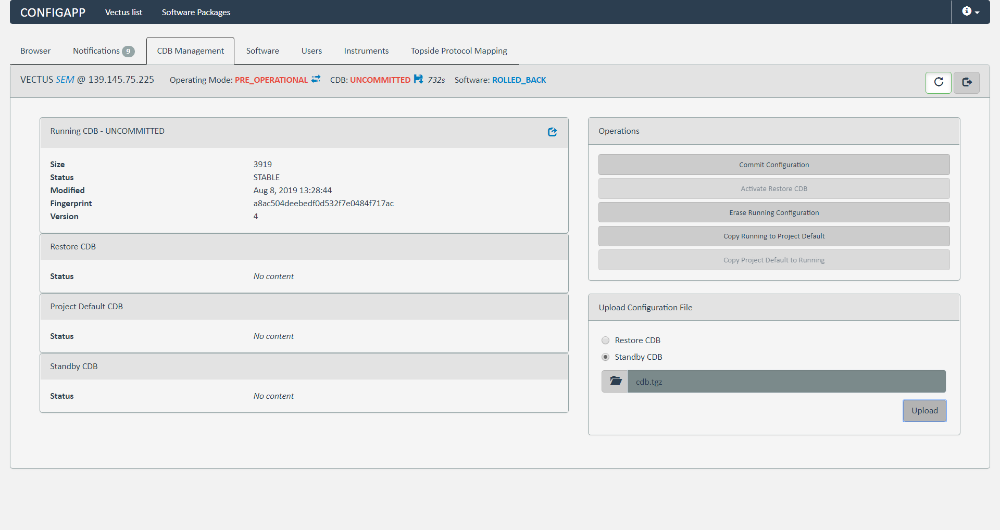
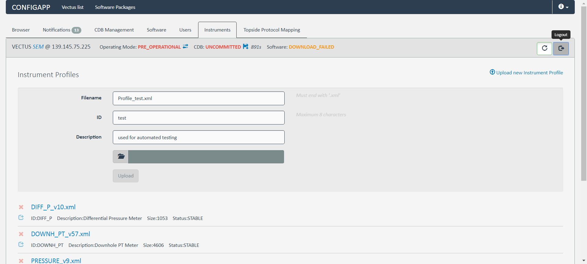
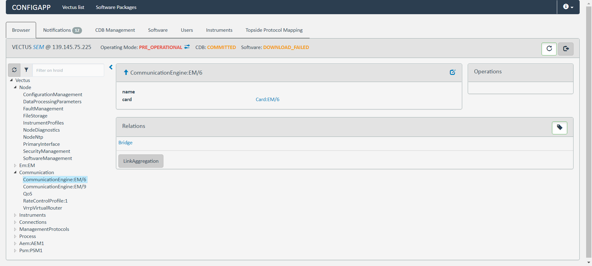
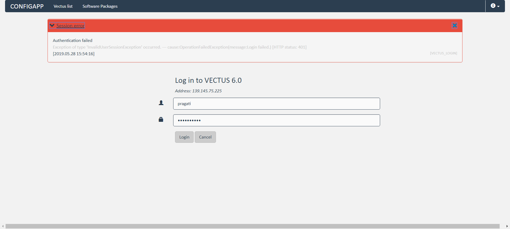
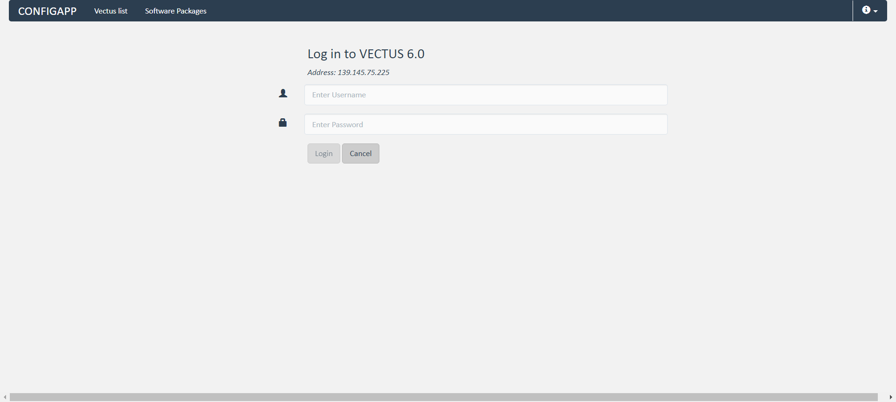
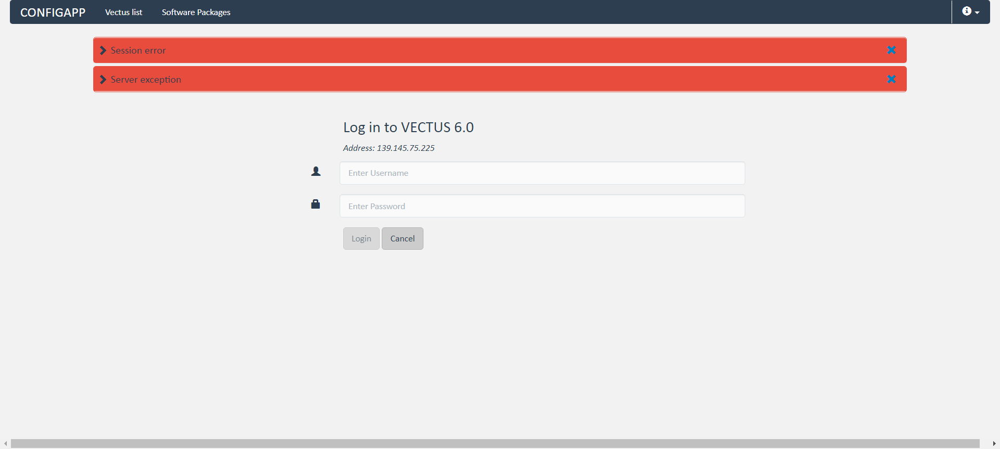
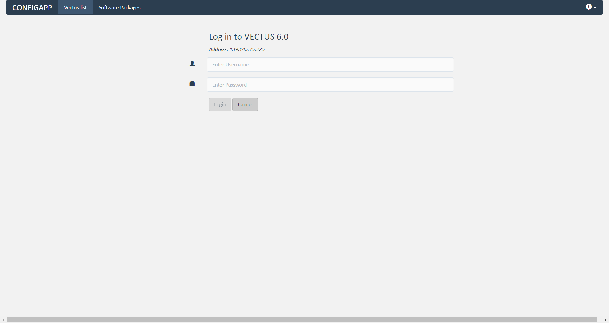
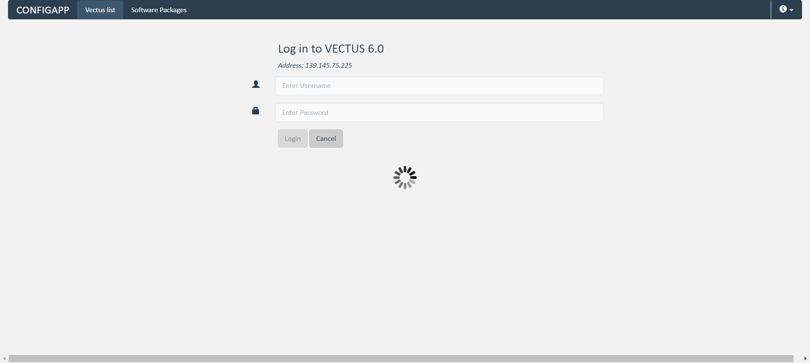
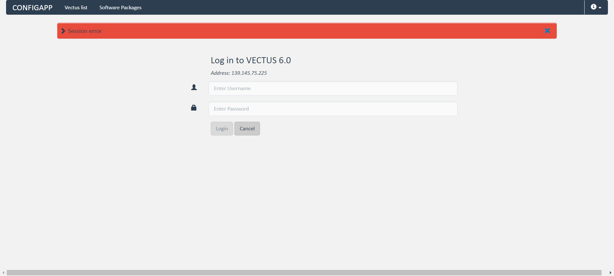

VFK-TC-56 - 37.443sTests: 1Skipped: 0Failures: 0 should clear Restore CDB - 37.433sPassed.✓Passed.✓Passed.✓Tests passed: 100.00%
VFK-TC-58,60 - 20.178sTests: 1Skipped: 0Failures: 1 should clear Standby CDB - 20.168sFailed: Index out of bound. Trying to access element at index: 5, but there are only 5 elements that match locator By(css selector, .clearfix.ng-binding)✗Tests passed: 0.00%
VFK-TC-38 - 75.289sTests: 1Skipped: 0Failures: 0 should upload instrument profile - 75.283sPassed.✓Passed.✓Tests passed: 100.00%
VFK-TC-120 - 30.926sTests: 1Skipped: 0Failures: 0 add instance - 30.918s***Skipped***Tests passed: 0%
VFK-TC-66 - 18.002sTests: 1Skipped: 0Failures: 0 verify authentication error - 17.996sPassed.✓Tests passed: 100.00%
VFK-TC-67 - 30.432sTests: 1Skipped: 0Failures: 0 admin role creation as admin - 30.427sPassed.✓Passed.✓Tests passed: 100.00%
VFK-TC-68 - 60.409sTests: 1Skipped: 0Failures: 0 admin role creation as operator - 60.399sPassed.✓Passed.✓Passed.✓Tests passed: 100.00%
VFK-TC-69 - 74.124sTests: 1Skipped: 0Failures: 0 admin role creation as engineer - 74.118sPassed.✓Passed.✓Passed.✓Tests passed: 100.00%
VFK-TC-70 - 80.795sTests: 1Skipped: 0Failures: 0 should create MONITOR - 80.792sPassed.✓Passed.✓Passed.✓Tests passed: 100.00%
VFK-TC-72,74,77,78 - 95.178sTests: 1Skipped: 0Failures: 0 should change the role of a user as ADMIN - 95.175sPassed.✓Passed.✓Passed.✓Passed.✓Passed.✓Passed.✓Tests passed: 100.00%
{kind=link}
{kind=link}
{kind=link}
{kind=link}
{kind=link}
{kind=link}
{kind=link}
{kind=link}
{kind=link}